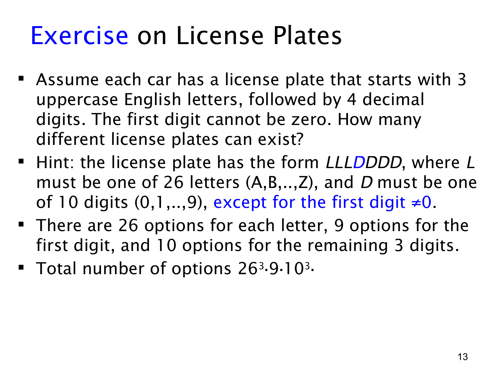

课件第 13 页讲解原文
查看这一页课件

车牌计数：单独处理受限制的位置
车牌格式是 3 个大写英文字母，后面接 4 个十进制数字，且第一个数字不能是 0。可以把 7 个位置写成：
L1L2L3D1D2D3D4.
例如 ABC1234 符合格式，而 ABC0123 不符合，因为数字部分的第一位是 0。
依次填写各个位置，用乘法法则计数：
| 位置 | 允许的字符 | 选择数 |
|---|---|---|
| L1,L2,L3 | A 到 Z | 每位 26 种 |
| D1 | 1 到 9 | 9 种 |
| D2,D3,D4 | 0 到 9 | 每位 10 种 |
所以总数为：
26×26×26×9×10×10×10=263⋅9⋅103=158,184,000.
这里默认字母和数字都允许重复，因为题目没有禁止重复。因此 AAA1000 也是允许的，不能把三个字母位置写成 26×25×24。
“第一位不能为零”的限制只作用于数字部分的第一位，不是让四个数字都不能用零。如果误写成 263⋅94，就会漏掉后面包含 0 的合法车牌。
这类题的可靠做法是先画出位置，逐个标注每个位置的合法选择数，再相乘。位置顺序本身决定了结果，ABC1234 和 BAC1234 是不同车牌，无需再除以排列数。